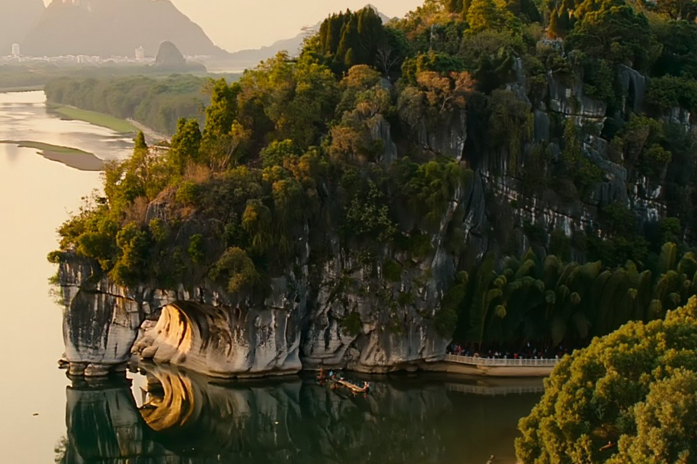

Guilin-Elephant-Trunk-Hill
桂林 · 象鼻山
Last updated: August 2026

Every city has one landmark the locals quietly stop noticing, and Guilin's is Elephant Trunk Hill. The mountain in the middle of town really does look like an elephant putting its trunk down to drink from the river — it's on the city's symbol, on local products, everywhere — and yet you can walk up, take the classic photo, and be out again without fighting a crowd. It's the rare city icon that's both genuinely iconic and genuinely easy to do.
The Shape, and Why It's the City's Mark
Elephant Trunk Hill sits where the Li River meets Peach Blossom River, a low round mountain with a big arch cut through it near the waterline. From the right angle, the arch forms the gap between the elephant's body and its trunk, and the rock below reads as the trunk dipping into the river. That silhouette is the reason it's the city's symbol — it's one of those shapes you instantly recognize once someone points it out.
The details that matter on the ground:
- The arch: the big opening under the "belly" is called the Water Moon Cave — when the pool below is calm, the arch and its reflection make a circle, hence the name.
- The spit of land: a sandbank called Azhou Bay wraps one side, which is where you get the classic full-elephant view with the trunk down by the water.
- It's central: this isn't a remote mountain — it's in the city, a short walk or ride from the main Guilin sights.
First-Person Notes From a Late-Afternoon Stroll
I went toward the end of the day, which is the right call. The hill is compact enough that you don't need to block out hours — I walked in, found the riverside path, and took the classic view from across the water where the whole elephant silhouette shows against the low sun. The light was warm by then and the reflection in the river made the arch read as a near-perfect circle.
What I liked was how un-touristed it felt despite being the city symbol. There were families strolling, a few people with cameras at the standard spot, locals cutting through on their evening walk — not the organized queues you'd expect at a "must-see." I crossed to the sandbank side for the wider angle, then walked back along the river as the light went soft.
- The classic frame: from the far bank or lower riverside, so the trunk-down profile and its arch are both in shot.
- Best light: late afternoon to early evening; the low sun shape-and-reflection composition is the keeper.
- Keep it short: the hill itself is a quick visit — a walk around the base and the riverside path covers it. This is a "rolling stop," not a half-day.
Why It's Worth Doing Even Though It's Not Your Only Reason
Guilin's real draw is the Li River and the karst scenery outside town, and Elephant Trunk Hill is easy to overlook as a "tourist trap in the city." It's the opposite of that. It's the city's actual identity — the one image that says Guilin — and it takes twenty minutes. If you're already in town for the river or as a base, there's no good reason to skip the symbol you can see and shoot in the time between two other things.
It also works as a gentle intro or wrap-up: arrive, see the elephant silhouette, get your bearings along the river, then head to the bigger scenery. Quiet on entry, free to wander the surrounding riverbank, strong photo almost regardless of skill — that's a good return on a short visit.
How to Fit It Into a Guilin Stop
- Combine with a riverside walk: the Li River and city riverside paths around the hill are pleasant on foot; see the hill and keep walking along the water.
- Pair with arrival or departure: it's central, so it slots in the afternoon you get into Guilin or the morning before you head out to the river or countryside.
- No need to rush or schedule: it's accessible and small; just go when you're nearby and the light's decent.
A Few Practical Things
- Getting there: central Guilin; walkable or a short ride from the main city sights along the Li River.
- When to go: late afternoon for the light and the reflection; weekday evenings are calmer.
- What to bring: a phone or camera is enough; comfortable shoes for the short riverside walk. No gear hauling needed.
- Address note: written as Guangxi Zhuang Autonomous Region, per the Guangxi series.
Bottom Line
Elephant Trunk Hill is the shape that defines Guilin — a mountain that looks like an elephant drinking from the river, and the city's symbol for it. Unlike a lot of icons, it doesn't cost you a crowd or a full schedule: it's central, quick, and oddly quiet, with a strong photo from the riverside in late light. If you're in Guilin for the river or the karst beyond, the hill is the easiest, most painless version of a city landmark you'll do — the one locals pass every day and you should still stop for.
Produced by Deep in China — Go deeper than any tourist ever goes.